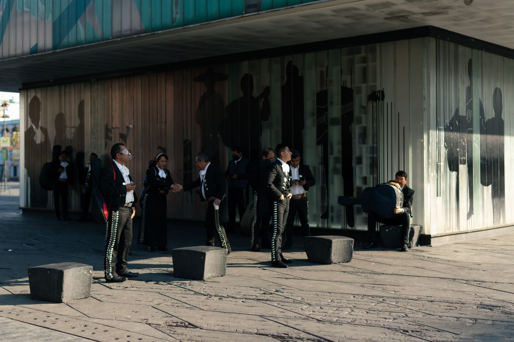

§ 01 — The entrance nobody saw coming
The brief
The groom wanted his bride to hear the band before she saw it: as she walked into the courtyard for the reception, the first trumpet note should land. The planner, Daniela R. of Austin, gave us a hard constraint — the entrance cue was a 40-second walk from the courtyard gate to the head table, and the couple would not rehearse it.
Decisions
We set up behind the courtyard wall, out of sight, an hour before guests arrived. The cue was the planner’s text message as the bride reached the valet stand — a two-minute warning, then a second text at the gate. The trumpet opened alone on the first strain of Guadalajara, and the full band entered on the chorus as the couple came through the arch. The run-sheet — cue times, song order, the two reception sets — went to the planner and the venue a week ahead, and we walked the courtyard at the rehearsal dinner to time the walk ourselves: 38 seconds at a wedding pace.
Outcome
The entrance landed on the chorus, both sets ran to the sheet, and the couple rebooked the trío for a first-anniversary serenata before the night ended. The planner’s account of the entrance is on the Songbook page.
“We heard the trumpet before we saw a single musician. Then the whole band came through the arch on the chorus. Our guests still talk about it.”